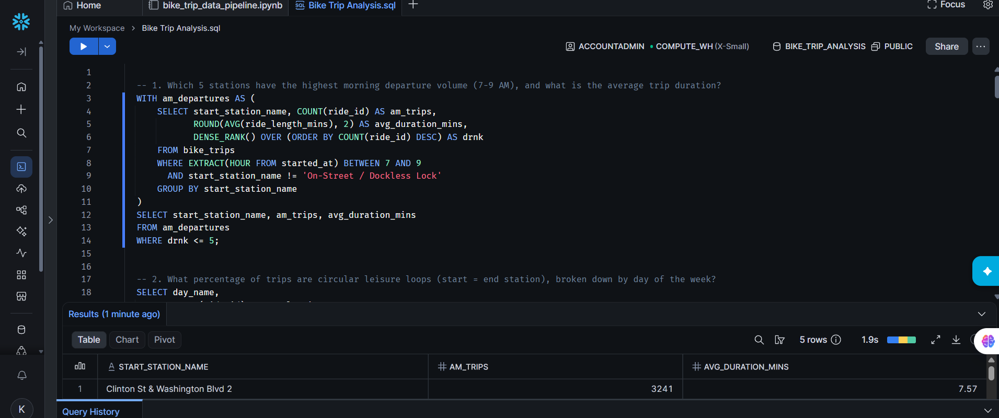
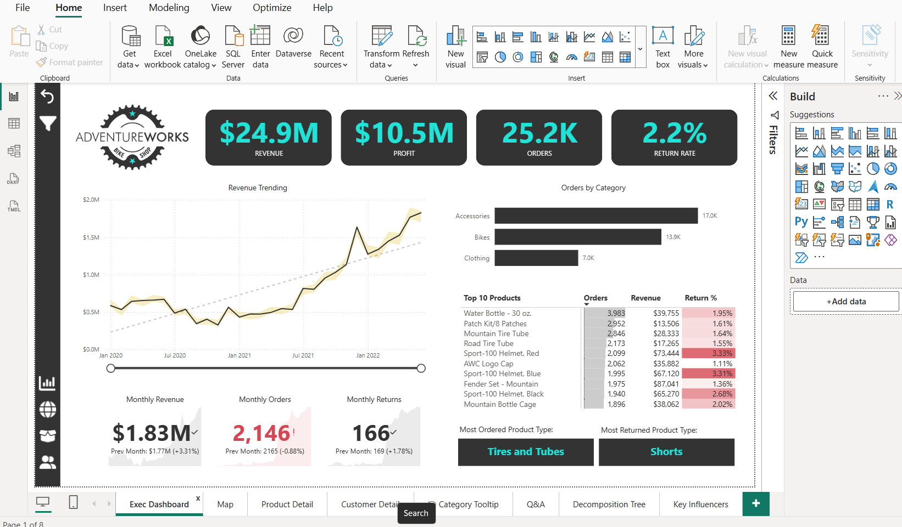
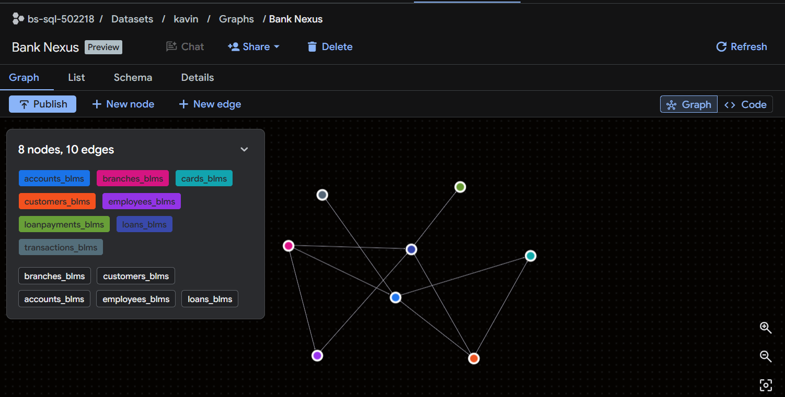
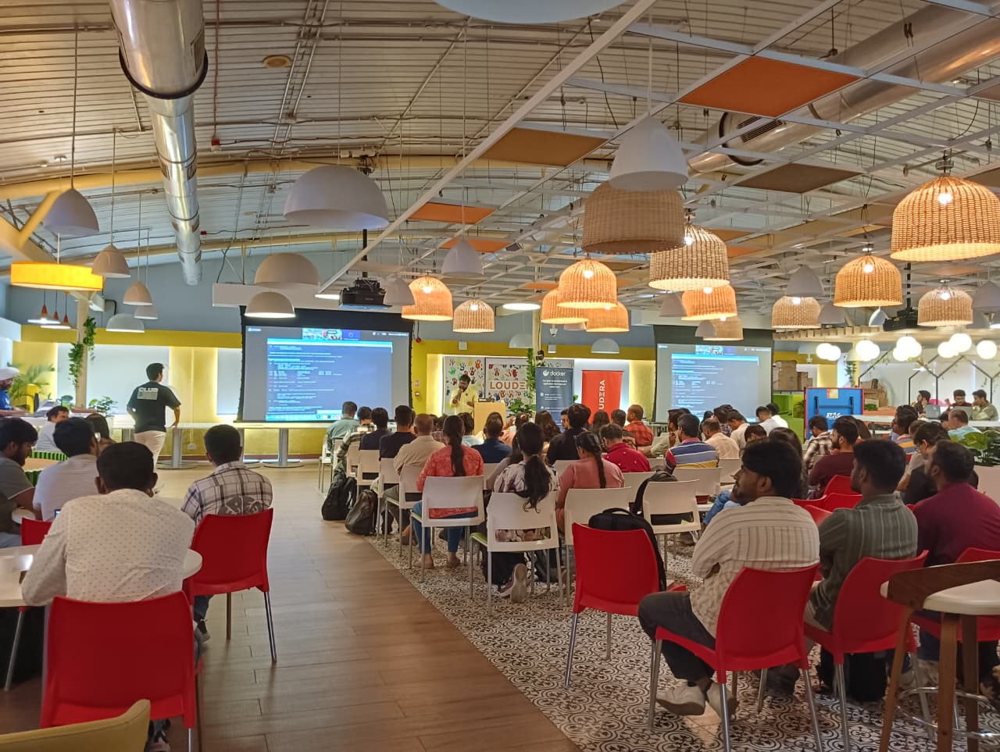
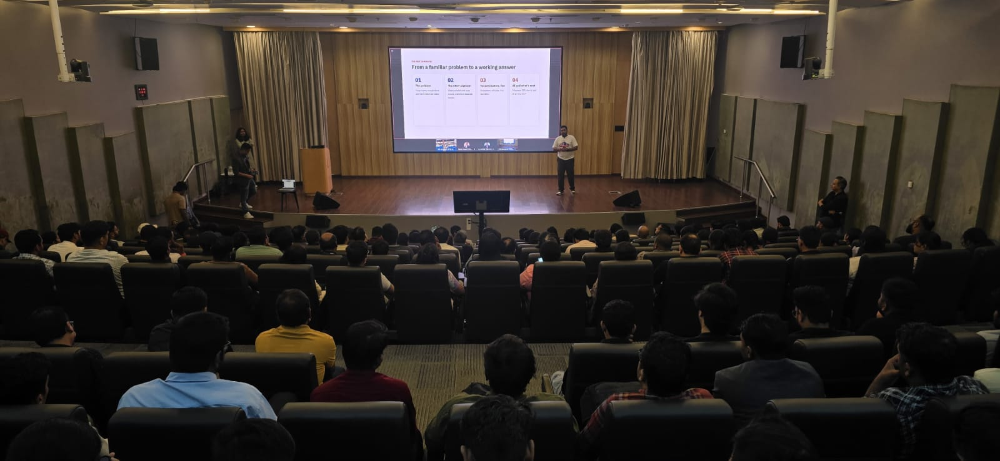

Built on an AI & Data Science foundation, strengthened by business experience, and focused on turning data into actionable insights.
Currently a Data Analyst Intern at BDreamz Global Solutions — working with real-world datasets, performing data analysis, and developing dashboards to generate actionable insights.
Pull data from SQL, Excel
→Handle nulls, duplicates, outliers
→EDA & statistical testing
→Power BI Dashboards
→Actionable insight for stakeholders
End-to-end analytics projects covering Advanced SQL querying, Python analysis and Power BI dashboards — turning raw data into meaningful business insights.
Problem: The raw bike trip records had missing station names, duplicate rides, and bad durations and coordinates, so it was hard to see how members and casual riders actually used the system or where demand peaked.
Solution: I loaded the trip data into Snowflake and cleaned it in Python, removing duplicates, trips under 1 minute or over 24 hours, and coordinates outside Chicago. I then engineered features like ride length, round-trip, commute-window and duration bands, and answered 14 business metrics in SQL using CTEs, window functions and conditional aggregation.
Impact: Turned raw trip logs into an analysis-ready Snowflake table that shows commuter vs. leisure behavior, the busiest morning stations and corridors, and which stations have the highest casual-rider share.

Drag to rotateProblem: Sales, product and customer data lived in separate raw files with no clear structure, so it was hard to get a real read on revenue trends or how products and customers were actually performing.
Solution: I cleaned and shaped that raw data into a proper star schema directly in Power BI, then built out a 4-page dashboard – covering executive KPIs, sales trends, product and returns performance and customer behavior – using over 20 custom DAX measures along with features like AI-powered Key Influencers, decomposition trees, bookmarks, anomaly detection and drill-through pages.
Impact: Turned messy, disconnected files into 4-page interactive dashboards people could actually explore and make decisions from, letting me practice real end-to-end BI work – from data cleaning to polished, decision-ready visuals.

Drag to rotateProblem: Banks often struggle to get a clear view of loan performance and risk because the data is scattered across disconnected records, making it hard for teams to spot repayment issues or risky lending patterns before they become costly.
Solution: I built and structured an 8-table relational database with close to 305K records in BigQuery, then wrote SQL queries using CTEs, window functions, and multi-table joins to dig into borrower behavior and loan trends.
Impact: Answered 13 real business questions a bank might actually ask, giving a clearer picture of loan performance and default patterns while sharpening my SQL skills for BFSI-focused analyst roles.

Drag to rotateDeloitte
HackerRank
LinkedIn Learning
Mahendra Engineering College — 2020–2024
Exploring AI, data, security, and modern technology through community events.

Attended an insightful tech meetup in Bengaluru covering modern AI, data engineering, and software security. The sessions explored building reliable AI agents for production, secure sandboxed execution with Docker, AI governance, and software supply chain security. Gained practical insights into deploying scalable and secure AI systems while learning from industry experts and connecting with fellow technology professionals.

Attended an insightful community meetup hosted at Hewlett Packard Enterprise (HPE) covering enterprise-grade agentic AI, graph retrieval systems, multi-tenant container orchestration, and hybrid cloud automation. Explored practical architectures for building governed AI agents with context graphs, GraphRAG with agentic memory via Neo4j and GCP, rethinking Kubernetes multi-tenancy, and operationalizing workloads using HPE Morpheus.
Open to Data Analyst roles across Bengaluru & remote — immediate joiner.
Recruiters — drop a note directly. Submitting opens your email app pre-filled and addressed to me.